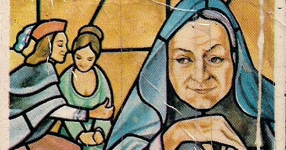

Esta obra desde un punto de vista logico es para personas adultas ya que con tiene muchisima violensia y sexo. Los personajes principales de esta trama son Calisto, Melibea y La Celstina aunque todos terminan teniendo un final debastador. Todos estos se conosen gracias a que Calisto que se henamora de Melibea una mujer hermosas y esta lo rechasa y lo toma por loco. Como quiera Calisto sigiue enamorado de ella y decide mandar a uno se sus criados para ver si podia encontra a alguien que lo ayudara, este se llamaba Sempromio. Sempromio va a casa de Celestina y le dice que tiene un cliente muy bueno para ella y que tiene mucho dinero y Celestina acepta la oferta pero al final del trabajo tenia que dividir el dinero con Sempronio y con el otro criado Parmeno. Aqui es cuando Calisto y Celestina se conosen. Pero Parmeno el otro criado, le avisa a Calisto que no se meta con ella, que ella es una vieja truquera, pero Calisto lo ignora. Celestina es describida como una vieja truquera y siempre se sale con la suya y esta le dice a Calisto que lo va a ayudar pero tiene que pagar asi que Calisto le ofrece su cadena de oro pero se la daria luego de que terminara su promesa de hacer que Melibea se enamorara de el. Una vez Celestina escucha lo que le dice Calisto y esta decide ir a casa de Melibea donde le dio una tela llamada hilado que la aria enfermar, el uso de esta tela era hacer que Melibea se enfermara y por obligacion enamorarse de Calisto por que esa era la unica forma de terminar sana. Al Melibea darse cuenta de que el amor de Calisto era la cura para su problema, decide acercarse mas a el. Celestina se sale con la suyas y Calisto le da su cadena de oro pero gracias a esta Celestian muere porque le dice a los dos criados que ella no tiene la cadena que se le perdio y los dos criados la matan despues de eso ambos saltan por la ventana y caen lastimados al piso, pero alguien los ve y los terminan matando por la muerte de Celestina. Una vez ocurrio esto Calisto se entera de las muertes Celestina, Sempromio y Parmeno gracias a sus otros dos criados Sosia y Ttistan. Realmente la muerte de estos tres no le importa ya que tenia a el amor de su vida. Paso no mucho tiempo y Elicia y Arusa van a casa del Centurio para decirle que le cayera agolpes a Calisto pero este se nego ya que el solo quiere matar entonces las dos prostitutas que vivian con Celestina decidieron vengarse y matar a Calisto. Auque la muerte de este no fue como planificada ya que se cayo y se rompiuio el craneo. Una vez Melibea se entera de su muerte decide encerrarse en la torre con pensamientos suicidas y asi fue, luego de contarle a su parde todo lo que paso entre ella y Calisto atravez de la puerta de la torre a su padre Melibea toma la decicion de suicidarse.
Esta obre terminada por Fernando de Rojas es muy romantica con un toque de magia. Es romantica por todo el amor que Calisto le tiene a Melibea y llega en puntos de locura como cuandomla decribe como su diosa, esto es un ejemplo del una sirena enamora con su mirada hasta que el enamorado muere muy parecido a lo que le paso a calisto. Ademas otra cosa muy intrigante es el parecido que tiene la tregicomedia con la obra de Shakesphere Romeo y Julieta son muy parecidas por el amor proivido que tenian estas dos parejas y por el final que ambas parejas terminan muertas por un hechizo.
La Celestina es una obra que ademas de tener muche que ver con magia o brugeria tambien tiene objetos muy significantes como lo son los sigientes:
La cadena representa la abaricia de los personajes y como estos no les importaria quitar una vida por solo un pedazo de oro.
Esta foto es un buen ejemplo de lo que era el poder y la abaricia. Una vez Celestina completa su trabajo recibio una cadena de oro la cual en la foto se puede ver una exprecion de felicidad malvada. La Celestian es una mujer llena de trampas y solo por su abaricia tubo que morir por las manos de los dos criados.
El hilado representa la lujuria de estos perrsonajes ya que Celestina teien el lujo de poder manipular a cualquier persona pero Melibea tiene el lujo de su hermosura.